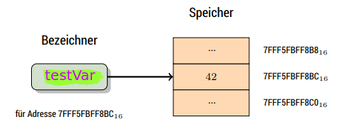
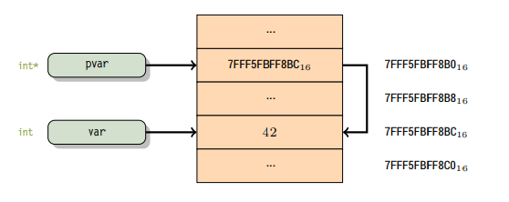

Storage and memory
Up until now our C programs followed the function model (stateless). Storing data is however required to realise the state model. To store data there are basically two options:
- storing in the file system (good for big data sets but slow)
- storing in memory (faster but limited in some aspects as well)
We continue with the latter option (ᵔᴥᵔ).
C is theoretically able to write to and acces every place in memory. Due to the implied dangers of this, most operating systems prevent this to some degree. There are three fundamental methods to reserve (allocate) memory:
- (implicit) "named" memory allocation at compile time
- "anonymous" memory allocation at run time
- parameters which allocate storage at run rime as well
The terms "named" and "anonymous" are taken from the lecture script, I don't like them and think they're confusing. As I understand it the first method refers to the memory allocation that happens when you have e.g int num = 5; in your code and the compiler allocates/reserves at least 16 bits (2 bytes), while the second method refers to dynamic memory allocation via malloc() and calloc(). I'm not entirely sure if this is what the professor means xD.
Variables
Should the value of a place in memory be modified (purpose of the state model), you speak of (named or anonymous) variables. Should the value in memory stay unchanged, then it is a constant.
Named variables
Named variables in C have to be declared (analogus to functions). The declarations has to contain the type of the variable as well as the name. It is possible to declare multiple variables of the same type together ala int x, y ,z;.
When declaring a variable it is possible to also provide a storage class and/or a type qualifier. The storage class is declared via one of the following keywors auto, static, extern or register. These basically impact the scope, visibility and the life time of the specific variable.
-
auto(assumed by default if no other storage class is specified)- not often written because it is the default
-
autovariables can only be accessed within the block of declaration which defines their scope - however they can be accessed outside their scope by using pointers
- get a garbage value assigned whenever they are declared (without initilization)
-
static-
staticvariables preserve their (last) value even after they are out of scope - therefore only initialized once and exist until program termination, thus no new memory is allocated because they are not redeclared
- their scope is local to the function in which they were defined, global static variables can be accesed anywhere
- are assigned
0by default from the compiler
-
-
register- same functionality as auto variables with the difference that the compiler tries to store these variables in the register of the microprocessor, which makes access much faster than that of the variables stored in memory
- if no free register is available the variable is stored in memory
- address of register variables is not retrievable using pointers
Type qualifiers are declared via the keywords const, volatile or restrict and give hints to the compiler about the usage of the variables.
Variables declared outside of any function are global variables, while variables declared in blocks ({..}) are local variables. Only with the exception of variables with a storage class of extern, variables are also defined when they are declared that means that memory for the varibale is automatically allocated in memory (dont mix this with initializing and/or assigning) without the programmer having to do anything.
When the variable has a storage class of extern it is only declared but not defined and therefore has to be globally defined (in a different module).
A variable can be assigned a value via 0, this can also be done when declaring a variable → initilization.
-
Addresses
Every variable has an address (place in memory where it is stored) that can be retrieved with the
&"address of" operator/* addr .c -- address of a variable */ extern printf(char* c, ...); int main () { int testVar = 42; printf (" Variable var has the address %p and the value %d\n", &testVar ,testVar ); return 0; }
Variable var has the address 0x7ffc5d3f3694 and the value 42
Actually the identifier of a variable (eg
testVar) is just a synonym of the address.
-
Pointer
Variables can also hold addresses themselves! The prefix
*infront of the identifier of a variable makes it a pointer variable. It is essential for the compiler of what this address is built, therefore a pointer is always pointing to another specific type. For instance:-
int *p→ pointer that is pointing to an integer type -
float *p→ pointer that is pointing to a float type -
unsigned int *p→ pointer that is pointing to an unsigned integer type
If a generic memory address without a specific type shall be used then the base type
voidis used:-
void *ppointer that is pointing to an address - assigning void pointers is compatible to/with all other pointer types (→ no warnings!)
/* addr2 .c -- pointer to a variable */ extern printf(char* c, ...); int main () { int var = 42 , * pvar ; pvar = &var ; printf (" Variable var has the address %p and the value %d\n", pvar, var); printf ("Variable pvar has the address %p and the value %p\n", &pvar , pvar); printf ("The value that the pointer stored in pvar points to is %d\n", *pvar); return 0; }
Variable var has the address 0x7ffd08a3f97c and the value 42 Variable pvar has the address 0x7ffd08a3f980 and the value 0x7ffd08a3f97c The value that the pointer stored in pvar points to is 42
Example memory representation of the above code (addresses will differ): 
A type and its derived type (eg
intandint *) are different types.As seen in the code example above a pointer can be dereferenced via the dereference operator
*/* deref .c -- deref a pointer */ extern printf(char* c, ...); int main () { int y = 23 , *py = &y ; printf("y=%d (at %p)\n" ,*py, py ); /* same effect as printf ("y=%d\n" ,y); */ *py = 42; /* same effect as y=42 */ printf ("y=%d (at %p)\n", y, &y ); return 0; }
y=23 (at 0x7ffeeff30f1c) y=42 (at 0x7ffeeff30f1c)
-
Anonymous variables
Anonymous variables in C don't have a name but get memory allocated nevertheless. They are created at run time with functions from the C standard library. Anonymous variables are not declared.
More specifically the following functions that are declared in stdlib.h are used to allocate memory at run time:
-
void *malloc(size_t size)→ reservessizebytes in memory -
void *calloc(size_t count, size_t size)→ reservescount x sizebytes in memory and initializes them with a value of0
Both functions retrun the address of the anonymous variable.
To find out how much size/space is needed, C's sizeof operator comes in handy because the size of eg an int is not the same on all systems. It can be used on variables as well as on types and sizeof(int) return for example 4.
The programmer has (in contrast to named variables) manage the scope and lifecycle of anonymous variables. To release the memory that was allocated for an anonymous variable void free(void*) is used which takes the address of the anonymous variable.
To be able to do this you of course need the address of the anonymous variable and that is (amongst other reasons) why you should store it somewhere!
/* malloc .c -- anonymous variables */
extern printf(char* c, ...);
extern void* malloc(size_t);
extern void free(void*);
int main ()
{
int * p; // declare pointer to int
p = malloc(sizeof(int)); // allocate memory for an int and store the returned address of the allocated memory location and store it in p
*p =42 ; // dereference p and store the value 42
printf(" Pointer p has address %p and points to %p\n", (void*) &p ,(void*)p);
printf(" Anonymous variable has the value %d which is stored in %p\n", *p, (void*)p);
free(p); /* pass address and release memory */
return 0;
}
Pointer p has address 0x7fff1376cea0 and points to 0x55ffde405260 Anonymous variable has the value 42 which is stored in 0x55ffde405260
In the example above you can see that the variable is anonymous because the value 42 is nowhere stored directly in a named variable but is retrieved by dereferencing the pointer that points to the memory location where 42 is stored (*p).
Not releasing allocated memory can lead to so called memory leaks and is a frequent error cause. Another frequent error is trying to use anonymous variables that are already released (dangling pointer).
Helping advice to avoid the above errors:
- when you allocate memory with eg
mallocimmediately write the code to free the memory as well - when releasing/freeing an anonymous variable assign it the (symbolic) value
NULLwhich is defined instdlib.h- it is guaranteed that there is never another variable at a location that is described by
NULL - dereferencing
NULLleads to a run time error - if functions like
mallocfail they also returnNULLtherefore it is advised to check pointers againstnullbefore using them
- it is guaranteed that there is never another variable at a location that is described by